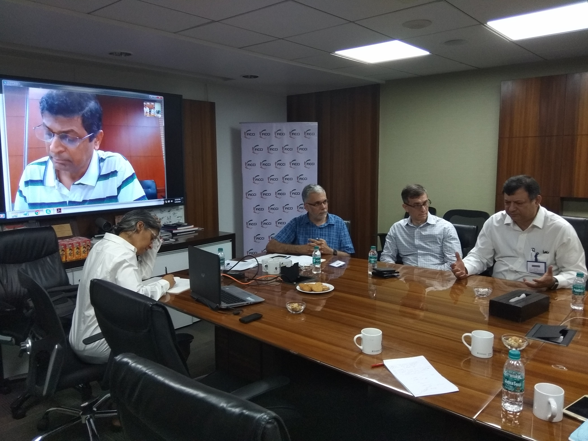
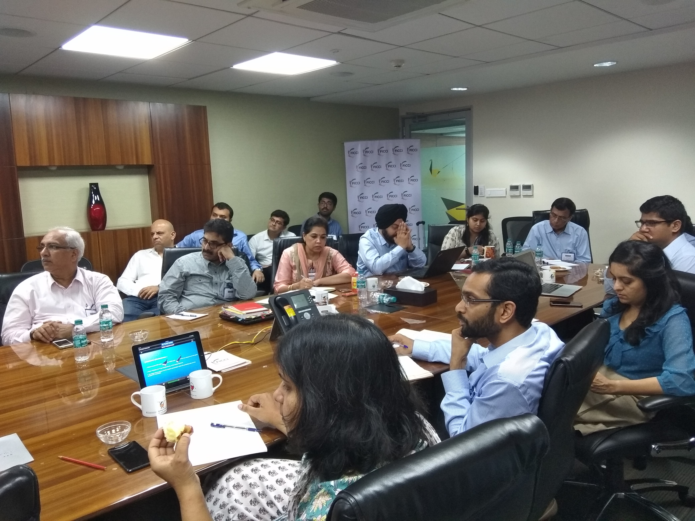
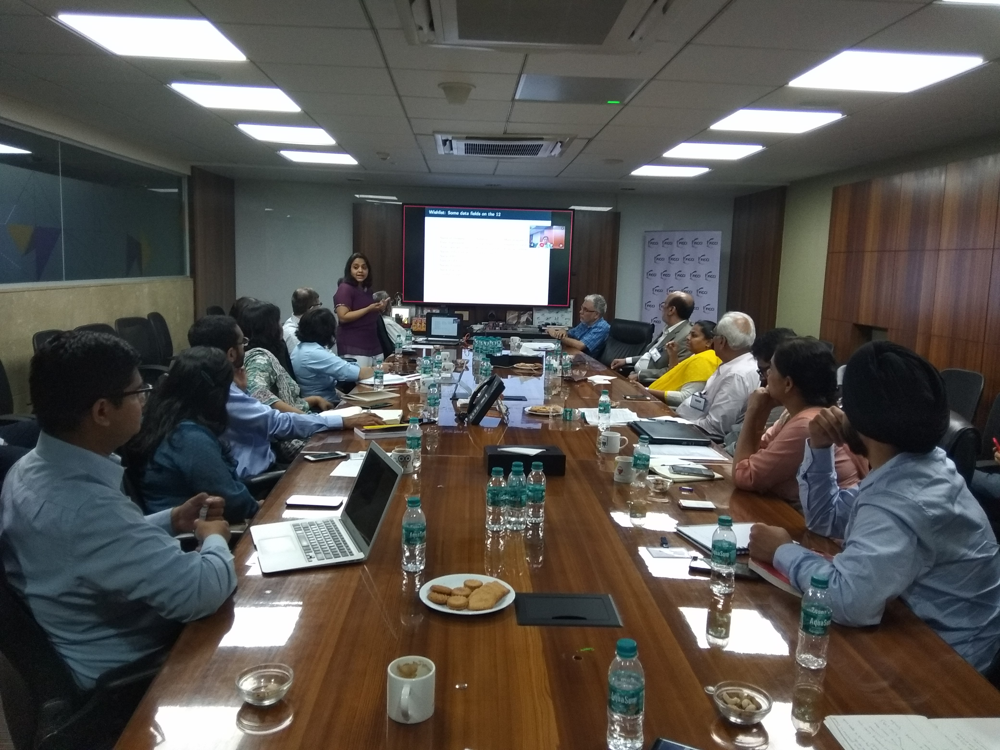
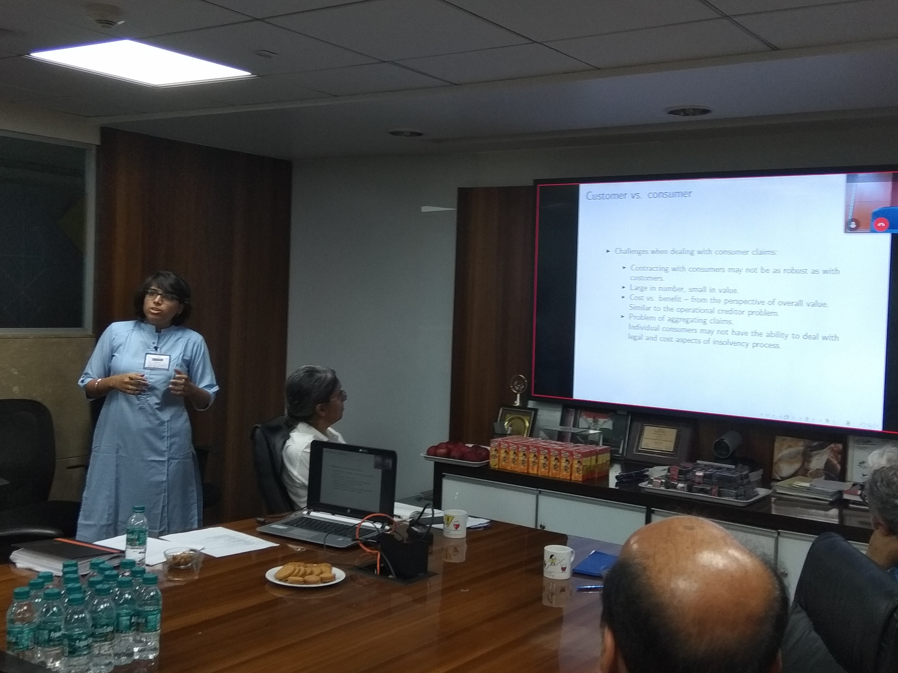
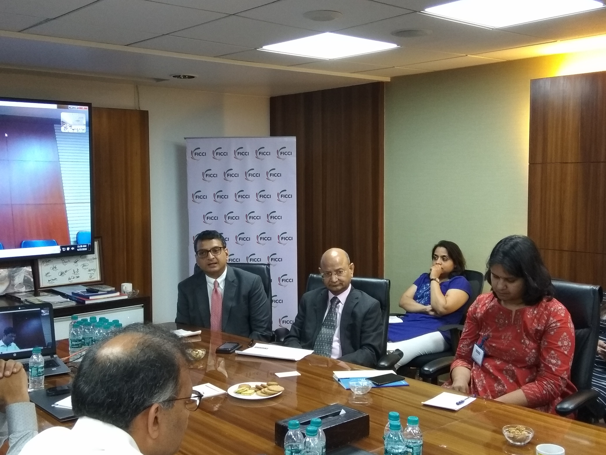
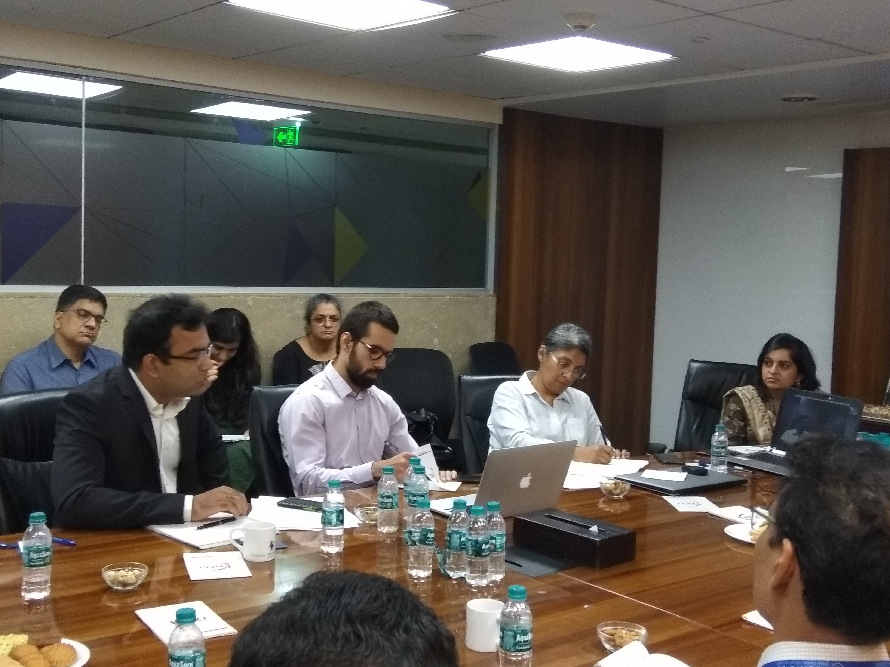

27th - 28th April, 2018
Swan, 11th Floor, Edelweiss House, Kalina, Mumbai
As a precursor to the first IBBI-IGIDR Insolvency and bankruptcy conference to be held on 3rd - 4th August 2018, the Finance Research Group at the Indira Gandhi Institute of Development Research (IGIDR), Mumbai, is organising a Pre-conference workshop.
The workshop will be a two day event with seven paper presentations and four panel discussions, structured as follows:
| 09:30 - 10:00 | Registration, Coffee and Tea |
| 10:00 - 10:15 | Opening Remarks Susan Thomas, Finance Research Group, IGIDR, Mumbai |
| 10:15 - 10:45 | Keynote Address M. S. Sahoo, IBBI |
| 10:45 - 11:20 | Watching India's insolvency reforms: One year of IBC [presentation] Surbhi Bhatia, Varun Marwah, Gausia Shaikh and Bhargavi Zaveri, Finance Research Group, IGIDR Discussant: Suharsh Sinha, AZB & Partners |
| 11:20 - 11:30 | Tea Break |
| 11:30 - 12:30 | Panel 1: Challenges in arriving at a resolution plan Abizer Diwanji, E Y India Srikrishna Dwaram, True North Co Surya Mahadev, Multiples Alternate Asset Management Harish Chander,Edelweiss Krishnava Dutt, Argus Partners |
| 12:30 - 13:30 | Lunch |
| 13:30 - 14:30 | Panel 2: IBC: A Reality Check Joshua Felman, J. H. Consultants Suharsh Sinha, ABZ & Partners K R Saji Kumar, IBBI Prasanth Regy, IBBI |
| 14:30 - 15:05 | The impact of the RBI 12 Joshua Felman, J. H. Consultants, Varun Marwah and Anjali Sharma, Finance Research Group, IGIDR [presentation] Discussant: Richa Roy, Law and public policy professional |
| 15:05 - 15:15 | Tea Break |
| 15:15 - 15:50 | Regulating Insolvency Professionals under the IBC - Tracing pathways to regulation based on a study of professional development [presentation] Anirudh Burman, NIPFP and Rajeswari Sengupta, IGIDR Discussant: Prasanth Regy, IBBI |
| 15:50 - 16:25 | Insolvency and Corporate Governance: Linkages and limitations [presentation] Richa Roy, Law and public policy professional Discussant: Joshua Felman, J. H. Consultants |
| 10:00 - 10:30 | Registration, Coffee and Tea |
| 10:30 - 11:05 | Consumers as creditors in corporate bankruptcy [presentation] Gausia Shaikh and Anjali Sharma, Finance Research Group, IGIDR Discussant: Renuka Sane, NIPFP |
| 11:05 - 11:40 | Catch and Release: Data in the IBC ecosystem [presentation] Adam Feibelman, Tulane Law School and Renuka Sane, NIPFP Discussant: Gausia Shaikh, Finance Research Group, IGIDR |
| 11:40 - 12:00 | Break |
| 12:00 - 13:00 | Panel 3: Creating a market for stressed assets Ravi Chachra, Eight Capital Susan Thomas, Finance Research Group, IGIDR Ajay Shah, NIPFP Harsh Vardhan, Bain Consulting Joshua Felman, J. H. Consultants Badri Narayan, Third Eye Capital |
| 13:00 - 13:10 | Closing remarks followed by lunch |





